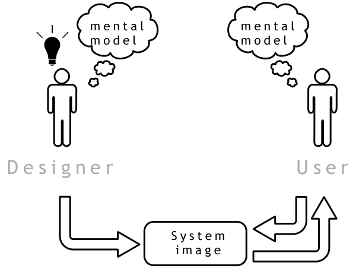

I have read “The Philosophical Significance and Social Impact of Software”. In the article, the author expressed that software not only serves as a technical tool but also has impacts on the philosophical and social levels, including how it shapes human cognition, social structure, and power distribution.

From the article, I learned that software is not just a tool for completing tasks. It abstracts, processes, and expresses the real world as data and algorithms through code. This abstraction not only reflects human understanding of the world but also different philosophical commitments. For example, by writing code to simulate physical phenomena or predict market behaviours, we, to some extent, reconstruct the model of reality. This process made me realise that programming is not just a technical activity but an interpretation of reality with profound philosophical significance.
The article also mentioned that software has ontological power as it redefines and constructs the world by encoding ideas. Under the influence of software, many rules in the physical world are transformed into executable algorithms, and it can even reshape people’s ways of cognizing and dealing with reality. For example, AI and automated software can not only assist people in making decisions but also change the way people view work. This ontological power made me start to reflect that the design of code is not just a tool but also carries the cognisor’s and intender’s understandings and intentions. Therefore, when learning and designing programming, we need to be more consciously aware of the potential impacts of code on reality. In addition, code itself has normative power, similar to that of laws. By setting system rules and behavioural boundaries, software actually regulates the ways of human operations and interactions. This view made me realize that the design of many software is not just about providing services but also stipulating the scope of users’ behaviours. For example, the algorithms of social platforms not only affect the content we see but also, to some extent, our social ways. Understanding this made me attach more importance to how to formulate rules in future programming projects to avoid inadvertently imposing unnecessary restrictions on users and provide the widest range of freedom.
Finally, the article also analysed in depth the role of software in power distribution, pointing out that programmers, companies, governments, etc. distribute power in society through software. This made me realise that code is not only a technical product but also an extension of power. People and organisations with programming capabilities can achieve specific purposes through software, such as guiding the market or influencing public behaviours through data collection and algorithm analysis. I recognised that as a programming learner, I not only need to master the technology but also need to be aware of the social responsibility of the technology and understand the potential impacts that the code I write may have on society.
To sum up, through this article, I realised that software is not only a technical tool but also has far-reaching impacts on the philosophical and social levels. Codes and algorithms not only affect human behaviours but also shape the way humans understand reality. As a future programmer, I need to be aware that code is not only the realisation of functions but also carries some social intentions. Moreover, the role of software in power distribution also made me realise that mastering technology is not neutral, and technical ability represents an invisible power. In the future when I learn programming, I will pay more attention to the social responsibility of code and strive to create more transparent and open systems to avoid abusing technology and affecting social fairness.